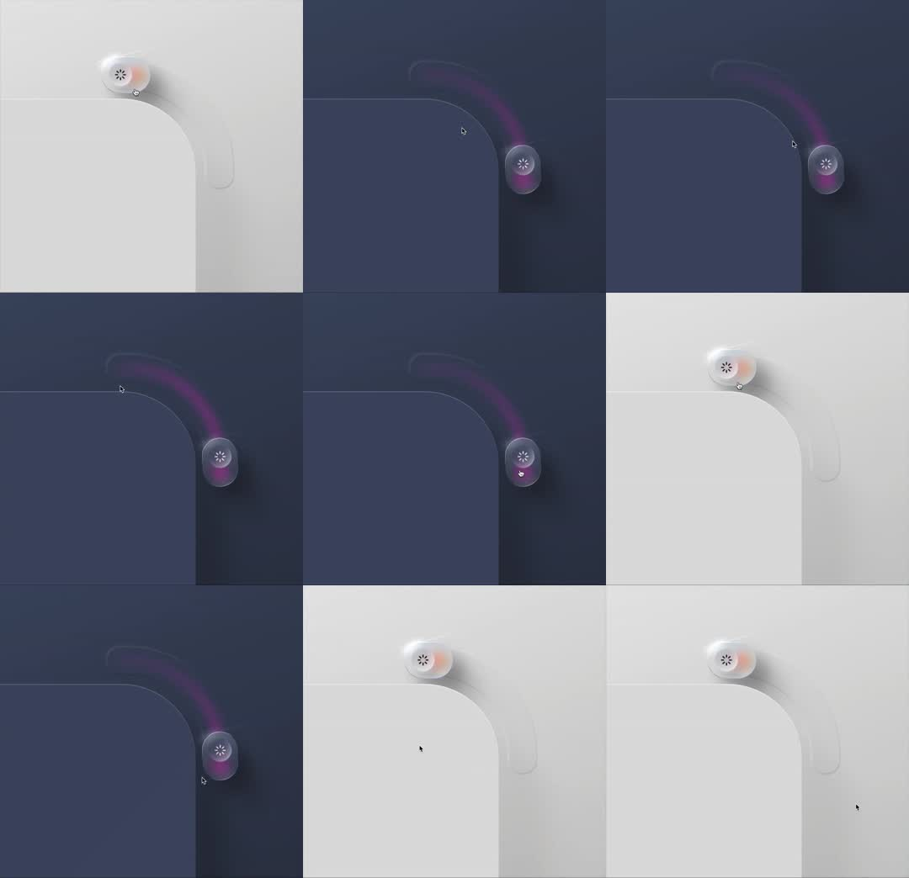

Dark mode toggle (illustration): a glass capsule knob with an asterisk/sun glyph rides the rounded corner of a giant squircle rail - sliding along the curved track from top to right edge; on the dark side the knob leaves a soft purple-pink glow trail along the rail; light and dark scenes alternate to show the toggle metaphor.
Media
Frame-by-frame

0-30%
Light grey scene: frosted glass pill-knob parked on the top edge of the rail's corner; rail is a hairline rounded-corner path; soft shadows.
30-60%
Dark navy scene: knob slides down the right segment trailing a purple/magenta glow along the rail; knob glass picks up the glow tint.
60-100%
Alternates back to light; knob positions vary (corner apex, mid-segment); glow trail only present on dark.
Build prompt
Rebuild this interaction 1:1: a dark mode toggle (illustration) - a glass capsule knob with an asterisk/sun glyph rides the rounded corner of a giant squircle rail, sliding along the curved track from the top edge to the right edge; on the dark side the knob leaves a soft purple-pink glow trail along the rail. Light and dark scenes alternate to show the metaphor.
## Integration
Integration: stack-agnostic spec - springs given as stiffness/damping, timed motions as duration + curve, canvas/shader notes are perf guidance only; map every value to your framework and animation library of choice.
## Scene
Light scene: frosted glass pill-knob parked on the top edge of the rail's corner; rail is a hairline rounded-corner path; soft shadows. Dark scene: navy field; knob on the right segment with a purple/magenta glow trail behind it along the rail; knob glass picks up the glow tint.
## Motion spec
Pattern: toggle slide along a path, alternating scenes.
- Slide: knob travels the curved track (top edge, around the corner, down the right edge) over 600ms, ease-in-out along the path; rotation stays tangential.
- Dark mode: the glow trail grows behind the knob as it slides (trail length follows travel), fading in opacity with distance from the knob.
- Light mode: no trail - hairline rail only.
- Theme inverts with the knob's arrival (150ms crossfade).
## Calibration
- 600ms ease-in-out along the path; the corner should feel like a guided curve, not two linear segments.
- Trail length is proportional to distance traveled on the dark side - it is a comet tail, not a filled track.
- The knob's glass tints from the glow only on dark; on light it stays neutral frosted.
## Reduced motion
Knob fades between endpoints (200ms); theme swaps with it; no trail.
## Don't miss
- Position from path parametrization - the corner must be truly rounded, not a mitered bend.
- The glow trail is purple-pink and soft (blurred); a crisp line reads as a progress bar.
- Light/dark scenes are two presentations of the same component - same rail, same knob, different atmospheres.